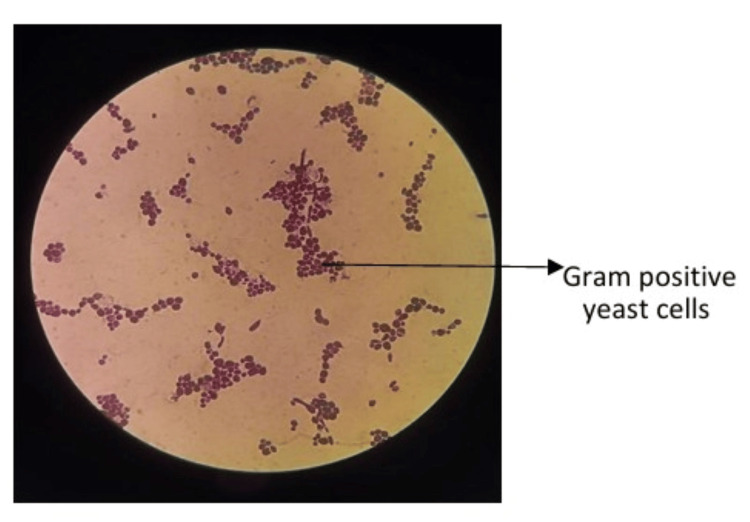
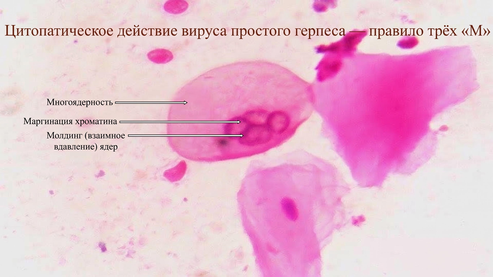

Воспалительные заболевания женских половых органов специфической этиологии
Специфические инфекции половых органов: возбудители, формы течения, пути распространения
Воспалительные заболевания женских половых органов делят на неспецифические и специфические — те, что вызваны строго определёнными возбудителями с известным путём передачи и предсказуемой клинической картиной. К таким возбудителям относятся гонококки, трихомонады, хламидии, микоплазмы и уреаплазмы, грибы рода Candida, вирус простого герпеса 2-го типа, вирус папилломы человека (ВПЧ) и микобактерии туберкулёза.[Айламазян, с. 197]
Деление на специфические и неспецифические процессы сегодня во многом условно: в 80—90% случаев к развитию воспалительных процессов половой сферы женщин приводит смешанная флора, часто с преобладанием анаэробных неспорообразующих микроорганизмов.[Айламазян, с. 197]
Кажется, что инфекция — это всегда что-то чужеродное, занесённое снаружи. На деле же возбудителей делят на две принципиально разные группы. Экзогенная половая инфекция — это заражение извне, от партнёра: гонококки, трихомонады, хламидии, ВПЧ и вирус герпеса именно так и попадают в организм.[Айламазян, с. 60]
Но существуют и эндогенные, условно-патогенные инфекции: стрептококки, стафилококки, кишечная палочка, грибы Candida и ряд других микроорганизмов постоянно присутствуют в половых путях. Возбудителями они становятся лишь тогда, когда снижается иммунная защита или нарушается микробиоценоз влагалища. Микоплазмы и уреаплазмы занимают промежуточное положение: их считают скорее индикатором бактериальной обсеменённости, нежели самостоятельной причиной воспаления. Подробный разбор их статуса по видам и цифр распространённости — в разделе о микоплазменной и уреаплазменной инфекции.[Савельева, с. 146]
По характеру течения выделяют несколько форм. Манифестная форма — это картина с выраженной симптоматикой: выделения, боль, лихорадка. Субклиническая форма протекает стёрто, и пациентка нередко не обращается к врачу, продолжая заражать партнёров.
Особого внимания заслуживает латентная инфекция — состояние, при котором возбудитель присутствует в организме, никак себя не проявляет и выявляется лишь при лабораторном обследовании. Хламидийная инфекция даёт бессимптомное течение в зависимости от локализации с частотой до 60—80%.
Отдельно выделяют бактерионосительство — длительное пребывание возбудителя в организме без клинических признаков болезни, но с сохранением заразности для половых партнёров. Именно носители обеспечивают устойчивую циркуляцию инфекций в популяции.
Трихомонадный вагинит поражает 60—70% женщин, живущих половой жизнью, и в виде моноинфекции встречается лишь у 10,5% больных. У 89,5% пациентов трихомоноз — смешанная инфекция, комбинация трихомонад с микоплазмами, гарднереллами, грибами, хламидиями, уреаплазмами. Это объясняется уникальным свойством трихомонад: они способны фагоцитировать гонококков, хламидий, микоплазм, грибы и вирусы, становясь для них резервуаром и транспортным средством одновременно.[Савельева, с. 380]
У 20% больных трихомонозом заболевание рецидивирует — именно из-за скрытого носительства сопутствующей флоры внутри простейшего.[Савельева, с. 380]
Теперь — о том, как инфекция добирается до верхних отделов половых путей. Восходящая инфекция — это распространение возбудителя от влагалища и шейки матки вверх: к эндометрию, маточным трубам и брюшине. Главный механизм — активный транспорт: инфекционные агенты проникают в верхние половые пути вместе со сперматозоидами и трихомонадами, которые подвижны благодаря жгутикам.[Радзинский, с. 179]
К одному сперматозоиду может прикрепиться до 40 гонококков; хламидии также фиксируются на поверхности сперматозоидов, причём чем выше их концентрация, тем к большему числу клеток они прикрепляются. Снижение pH среды усиливает прилипание микроорганизмов.[Радзинский, с. 179]
Существует и пассивный транспорт — за счёт сократительной деятельности матки и труб, а также перепадов давления при движениях диафрагмы; этот механизм изучен хуже. Гематогенный путь характерен прежде всего для туберкулёза половых органов.[Радзинский, с. 179]
И вот складывается вопрос: зачем лечить партнёра, если жалобы только у женщины? Потому что бессимптомный мужчина-носитель — главный источник реинфекции. Обследование и лечение половых партнёров — обязательный элемент ведения любой специфической инфекции: без одновременной санации обоих партнёров повторное заражение практически неизбежно.
При хламидиозе контрольные исследования проводят в течение 3 менструальных циклов после окончания курса, длительность которого при осложнённом процессе составляет не менее 14—21 суток.[Радзинский, с. 212]
Гонорея: возбудитель, классификация, клиника
Возбудитель гонореи — Neisseria gonorrhoeae, грамотрицательный диплококк, попарно сложенный так, что обращённые друг к другу стороны уплощены: в мазке пара клеток напоминает два боба, прижатых плоскими сторонами. Именно так гонококки выглядят внутри нейтрофилов на окрашенном по Граму препарате.
На этом мазке хорошо виден ключевой диагностический признак: пары бобовидных диплококков расположены внутри нейтрофила, а не рядом с ним. На что смотреть — на тёмно-красные парные клетки в центре цитоплазмы лейкоцита; фон вокруг светлый, клетки возбудителя чётко отграничены от ядерного материала нейтрофила.
Neisseria gonorrhoeae обладает выраженным тропизмом к цилиндрическому эпителию: уретра, цервикальный канал, маточные трубы, прямая кишка и конъюнктива — именно там, где выстилка однорядная цилиндрическая, гонококк укореняется первым. Многослойный плоский эпителий влагалища взрослой женщины он не поражает, и это объясняет, почему первичный очаг у женщин — не вагинит, а эндоцервицит или уретрит.[Савельева, с. 377]
Попав в клетку, гонококк уклоняется от уничтожения: нейтрофил его захватывает, но переварить не может — фагоцитоз остаётся незавершённым. Не будь у гонококка этого механизма, первая же волна нейтрофилов ликвидировала бы инфекцию до появления симптомов.
Выжившие внутри фагоцита бактерии переносятся через слизистую, а часть популяции переходит в L-формы — варианты без клеточной стенки, нечувствительные к антибиотикам, действующим на синтез пептидогликана. L-формы обеспечивают персистенцию и хронизацию.
Ещё один механизм устойчивости — выработка пенициллиназы, фермента, разрушающего β-лактамное кольцо пенициллинов: штаммы-продуценты пенициллиназы распространились повсеместно, и именно поэтому пенициллин давно утратил место в схемах лечения гонореи.
Мазок из влагалищного отделяемого: среди полиморфноядерных лейкоцитов видны те же характерные пары диплококков — внутри клеток, а не свободно. Обратите внимание: вокруг много лейкоцитов, что само по себе отражает остроту воспаления; на этом фоне внутриклеточное расположение гонококков и служит диагностическим критерием, отличающим гонорею от неспецифической инфекции.
Гонорею классифицируют по трём осям — локализации, давности и характеру течения. По локализации выделяют поражение нижних отделов мочеполового тракта и восходящую инфекцию верхних отделов. По давности: свежая гонорея — заболевание длительностью до 2 месяцев, хроническая гонорея — более 2 месяцев или с неустановленной давностью. Свежая гонорея, в свою очередь, протекает остро, подостро или торпидно; отдельно выделяют латентное течение (носительство без клинических проявлений).[лекция, с. 165]
| Ось | Варианты |
|---|---|
| Локализация | Нижние отделы / Верхние отделы (восходящая) |
| Давность | Свежая (до 2 мес) / Хроническая (более 2 мес) |
| Течение | Острое / Подострое / Торпидное / Латентное |
Как видно из таблицы, торпидное и латентное течение — наиболее опасные варианты: жалоб почти нет, женщина не обращается к врачу, а инфекция продолжает распространяться вверх и передаётся партнёрам.
Гонорея нижнего отдела охватывает несколько анатомических структур одновременно. Уретрит проявляется жжением и скудными гнойными выделениями; парауретральные ходы вовлекаются вместе с уретрой и служат резервуаром возбудителя при хронизации.
Бартолинит — воспаление большой железы преддверия влагалища — развивается, когда гонококк поражает выводной проток железы: проток закрывается, секрет накапливается, и формируется болезненный отёк в нижней трети половой губы, нередко переходящий в абсцесс.[Айламазян, с. 243]
Эндоцервицит при гонорее выражен ярче, чем при большинстве других инфекций: из шейки матки появляются обильные гнойные бели, а при осмотре в зеркалах видна гиперемия вокруг наружного зева.[Айламазян, с. 243]
Восходящая гонорея — распространение инфекции за пределы внутреннего зева — ведёт к эндометриту, сальпингиту и пельвиоперитониту. Подъём инфекции почти всегда связан с физиологическими состояниями, при которых раскрывается шеечный канал: менструация, аборт, роды.
В первые дни менструации отторгающийся эндометрий лишён защитного барьера, слизистая пробка вымывается, и гонококк беспрепятственно достигает полости матки.[лекция]
Острый гонорейный сальпингит сопровождается резкой болью внизу живота, лихорадкой и симптомами раздражения брюшины. Пельвиоперитонит завершает эту цепочку: воспаление выходит на брюшину малого таза, и клиническая картина становится неотличимой от острого живота.[Айламазян, с. 217]
Перенесённая восходящая гонорея оставляет стойкие последствия — спаечный процесс в маточных трубах и трубное бесплодие, о механизме которого говорилось в разделе о воспалительных заболеваниях органов малого таза. Агрессивность гонококка в итоге определяется сочетанием трёх факторов: тропизма к цилиндрическому эпителию, незавершённого фагоцитоза и способности к L-трансформации. Именно это сочетание превращает локальный уретрит или цервицит в восходящую инфекцию с угрозой бесплодия.
Диагностика и лечение гонореи, критерии излеченности
Диагностика гонореи строится на трёх методах, которые дополняют друг друга и ни один из которых не стоит применять в одиночку. Первый — бактериоскопия, то есть попросту микроскопия окрашенного мазка: материал наносят на стекло, окрашивают по Граму и под микроскопом ищут грамотрицательные диплококки внутри лейкоцитов. Метод быстрый и дешёвый, но при хронических и стёртых формах чувствительность падает, и отрицательный мазок ещё не означает отсутствия инфекции.
Именно поэтому параллельно обязательно выполняют культуральное исследование — посев на питательные среды. Культура, кроме того, позволяет определить чувствительность выделенного штамма к антибиотикам — это важно на фоне нарастающей резистентности гонококка.[лекция, с. 156]
Третья группа методов — молекулярные: ПЦР выявляет ДНК возбудителя даже при небольшом количестве материала; качественная ПЦР здесь целесообразна именно потому, что гонококков во влагалище и эндоцервиксе в норме быть не должно вовсе.[Радзинский, с. 74]
Материал для всех трёх методов берут из уретры, цервикального канала и прямой кишки — при гонорее прямокишечное поражение нередко протекает бессимптомно и остаётся незамеченным без целенаправленного взятия мазка. Посмотрите на этот перечень локусов: пропустить хотя бы один из них — значит оставить очаг инфекции, который станет источником реинфекции после лечения.
Этиотропная терапия назначается с учётом формы и локализации процесса. При гонорее нижних отделов мочеполового аппарата без осложнений протокол предусматривает однократное введение: цефтриаксон 250 мг внутримышечно или ципрофлоксацин 500 мг внутрь; альтернативой служат спектиномицин 2,0 г внутримышечно, офлоксацин 400 мг внутрь или ломефлоксацин 600 мг внутрь — также однократно.[Айламазян, с. 241]
При гонорее верхних отделов и осложнённых формах применяют цефтриаксон 1,0 г внутримышечно или внутривенно каждые 24 часа в течение 7 дней, или спектиномицин 2,0 г внутримышечно каждые 12 часов в течение 7 дней; лечение продолжают ещё 48 часов после достижения клинического эффекта.[Айламазян, с. 241]
Параллельно, с целью профилактики сопутствующей хламидийной инфекции, назначают азитромицин 1,0 г внутрь однократно или доксициклин по 100 мг 2 раза в сутки в течение 7 дней.[Айламазян, с. 241]
При сочетании гонореи с трихомониазом антипротозойные препараты — метронидазол, орнидазол, тинидазол — назначают первыми, до антибиотиков: трихомонады способны фагоцитировать гонококков и тем самым укрывать их от действия антибактериальных средств.[Айламазян, с. 241]
Лечение полового партнёра обязательно и проводится одновременно по той же схеме, независимо от результатов его обследования: при неосложнённой гонорее партнёра нередко лечат превентивно, не дожидаясь лабораторного подтверждения. На время лечения исключают приём алкоголя и половые контакты.[Айламазян, с. 235]
После окончания курса наступает этап контроля излеченности. Здесь применяют провокационную пробу — то есть попросту искусственное обострение с целью «вывести» гонококков из скрытых очагов в отделяемое, доступное для исследования.
Провокация бывает комбинированной: химической — смазывание уретры 0,5% раствором нитрата серебра, а цервикального канала — 2%; биологической — введение гоновакцины в количестве 500 млн микробных тел; термической — физиотерапевтические тепловые процедуры; алиментарной — острая, солёная пища и небольшое количество алкоголя. Комбинированная провокация даёт наибольшую вероятность выхода возбудителя из латентных очагов.[Радзинский, с. 234]
Критерии излеченности — совокупность клинических и лабораторных признаков, по которым судят о полном устранении инфекции. Проверку эффективности лечения проводят через 7—10 дней после его окончания: путём бактериоскопии мазков из уретры и цервикального канала с окраской по Граму и бактериологического исследования материала из тех же мест.[Айламазян, с. 241]
Затем контроль повторяют после очередной менструации, поскольку менструальная кровь служит дополнительным провоцирующим фактором и может «открыть» очаг, который оставался недоступным при предыдущем взятии материала. Отсутствие гонококков при бактериоскопии и посеве после двукратного контроля с провокацией позволяет считать пациентку излечённой.
Хламидиоз: возбудитель, цикл развития, клиника
Chlamydia trachomatis серотипов D–K — возбудитель урогенитального хламидиоза, облигатный внутриклеточный паразит. Вне клетки хозяина он не способен ни расти, ни делиться: сам он не умеет синтезировать АТФ и живёт за счёт энергетических ресурсов заражённой клетки. Тропность у него избирательная — к цилиндрическому эпителию, которым выстланы цервикальный канал, уретра и маточные трубы, поэтому первой мишенью почти всегда становится шейка матки.[Савельева, с. 377]
Именно зависимость от чужой клетки объясняет, почему хламидию нельзя описать как обычную свободноживущую бактерию. Весь цикл её размножения — от заражения одной клетки до выхода новых частиц — укладывается внутрь этой же клетки.
Цикл развития проходит через две формы, и разница между ними похожа на разницу между семенем и проростком. Элементарное тельце — компактная, метаболически почти неактивная форма: как сухое семя, она устойчива во внешней среде и способна перемещаться от клетки к клетке, но сама по себе не растёт.
Проникнув внутрь клетки цилиндрического эпителия, элементарное тельце «прорастает» в ретикулярное тельце — крупную, активно делящуюся внутриклеточную форму, которая утрачивает подвижность вовне, зато расходует ресурсы клетки-хозяина на собственное размножение. Скопление делящихся ретикулярных телец образует хламидийное включение — своеобразный внутриклеточный «инкубатор», в котором тельца снова превращаются в элементарные.
Инкубационный период — от 5 сут до 6 нед. Затем поражённая клетка разрушается, и в межклеточные пространства попадает множество новообразованных элементарных телец, способных инфицировать новые клетки.[Савельева, с. 377]
Одна из причин, по которой хламидиоз редко остаётся изолированной инфекцией, — способность возбудителя укрываться внутри других микроорганизмов половых путей. Трихомонада служит естественным резервуаром для хламидий, уреаплазм, гонококков и другой флоры.[Савельева, с. 380]
В виде моноинфекции трихомоноз встречается лишь у 10,5% больных, тогда как у 89,5% пациентов это сочетанный процесс, где трихомонады соседствуют с хламидиями, микоплазмами, гарднереллами и грибами. Практическое следствие простое: обнаружив трихомонады, есть основания заподозрить сопутствующий хламидиоз и вести обследование сразу на весь спектр возбудителей, а не искать одну инфекцию.[Савельева, с. 380]
Клиническая картина хламидиоза скудна, и это его главная особенность как возбудителя: бессимптомную инфекцию отмечают в зависимости от локализации с частотой до 60–80%. При остром эндоцервиците могут появляться слизистые или слизисто-гнойные выделения из влагалища, очень редко — ноющие боли внизу живота, а переход в хроническую стадию заболевания сопровождается исчезновением и этих симптомов. Экзо- и эндоцервициты в целом, независимо от возбудителя, выявляют у 70% женщин, обращающихся в поликлинические отделения.[Айламазян, с. 209]
Уретрит и парауретрит чаще всего не имеют клинической симптоматики, реже появляется местный зуд, неприятные ощущения при мочеиспускании и гноевидные выделения из уретры. Из-за такой скудности картины женщина нередко впервые обращается к врачу уже на стадии осложнений, а не в момент заражения. Этим объясняется разрыв между лёгкостью первичных проявлений и тяжестью последствий, о которых речь пойдёт дальше.
Распространяясь выше внутреннего зева шейки матки, инфекция приводит к восходящей форме — эндометриту, сальпингиту, сальпингоофориту и пельвиоперитониту. Сальпингит — самая частая локализация хламидиоза верхних отделов полового аппарата, и его течение латентное, малосимптомное. Отсутствие внешних проявлений не соответствует глубине морфофункциональных изменений в маточных трубах, последствием которых становится трубное бесплодие и внематочная беременность.[Айламазян, с. 243]
Хламидийный пельвиоперитонит, обычно сочетающийся с сальпингоофоритом, оставляет после себя спаечный процесс в малом тазу. Длительность лечения урогенитального хламидиоза, в том числе осложнённых форм, обычно составляет не менее 14—21 сут.[Айламазян, с. 243]
Диагностика и лечение хламидиоза
Что видит врач: пациентка со скудными слизисто-гнойными выделениями из цервикального канала, иногда с признаками аднексита, бесплодием или невынашиванием беременности в анамнезе. Нередко бывает вовсе без жалоб: бессимптомную хламидийную инфекцию отмечают с частотой до 60–80%.[Савельева, с. 377]
Отсюда вывод — ждать развёрнутой клиники нельзя. Обследованию подлежат не только женщины со слизисто-гнойными выделениями, но и половые партнёры больных урогенитальным хламидиозом, а также лица, проходящие проверку на другие инфекции, передаваемые половым путём. Сюда же относятся новорождённые от матерей, перенёсших хламидийную инфекцию во время беременности, и мужчины со слизисто-гнойными выделениями из уретры и симптомами дизурии.[Савельева, с. 377]
Дальше врач действует по протоколу, а не по одной картине: назначает лабораторную верификацию.
Возбудитель, Chlamydia trachomatis, живёт внутриклеточно и проходит цикл из двух форм за 24–72 ч. Элементарное тельце внедряется в клетку цилиндрического эпителия, превращается в ретикулярное тельце для размножения и снова в элементарное — для заражения соседних клеток. Именно внутриклеточная форма и определяет выбор метода: искать нужно не бактерию под обычным микроскопом, а её ДНК, антиген или живую культуру.[Радзинский, с. 232]
Взгляните на четыре способа поймать возбудителя в таблице ниже — каждый смотрит на своё, и поэтому годится для разных задач.
| Метод | Что выявляет | Материал | Когда применяют |
|---|---|---|---|
| ПЦР, в том числе в реальном времени | ДНК возбудителя; в реальном времени — ещё и её количество | соскобы и мазки из уретры, шеечного канала, влагалища в стерильной транспортной среде | первая линия скрининга и подтверждения диагноза |
| Прямая иммунофлюоресценция (ПИФ) | антиген хламидий после обработки мечеными моноклональными антителами | соскоб из уретры и шеечного канала на предметном стекле | быстрая верификация |
| Культуральный метод | живой возбудитель — заражённые им клетки McCoy | соскоб из уретры и шеечного канала в транспортном буфере | стандарт диагностики для спорных случаев, хотя результат приходится ждать дольше |
| ИФА | возбудитель иммунохимически | сыворотка крови или отделяемое половых путей | наравне с ПЦР при массовом скрининге |
Метод амплификации нуклеиновых кислот — так называется принцип, на котором стоит ПЦР: фрагмент ДНК возбудителя многократно копируют в пробирке, пока его не станет достаточно для обнаружения. Поэтому метод быстрый и не требует живого микроорганизма; материал для него — соскобы и мазки из уретры, шеечного канала и влагалища, взятые стерильными щёточками в транспортную среду.[Айламазян, с. 60]
Прямая иммунофлюоресценция устроена иначе: материал на стекле обрабатывают моноклональными антителами, мечеными флюоресцеином, и смотрят под люминесцентным микроскопом. Так ловят не ДНК, а белок на поверхности возбудителя, и результат зависит от того, кто читает препарат.
Культуральный метод медленнее обоих: соскобом заражают культуру клеток McCoy — стандартную лабораторную линию клеток, на которой выращивают хламидии. Через некоторое время заражённые клетки фиксируют и обрабатывают теми же мечеными антителами. Это единственный способ убедиться, что возбудитель живой, поэтому его и держат стандартом диагностики.[Айламазян, с. 61]
ИФА в протоколе не сам по себе, а в паре с ПЦР — оба метода применяют вместе при массовом скрининге.[Савельева, с. 41]
Дальше врач лечит по протоколу. При неосложнённой форме — инфекции нижнего отдела, цервиците и уретрите без распространения выше — назначают один из препаратов:[Савельева, с. 383]
- азитромицин, внутрь 1 г однократно;
- доксициклин, внутрь 100 мг дважды в сутки 7 дней;
- джозамицин, внутрь 500 мг трижды в сутки 7 дней;
- кларитромицин, внутрь 250 мг дважды в сутки 7 дней;
- рокситромицин, внутрь 150 мг дважды в сутки 7 дней;
- офлоксацин, внутрь 200 мг дважды в сутки 7 дней.
При осложнённой форме — восходящей инфекции верхних отделов — те же препараты, но азитромицин уже 500 мг дважды в сутки, а общая длительность лечения составляет не менее 14–21 сут.[Савельева, с. 378]
Если сальпингит подтверждён как хламидийный, начатую парентеральную схему — ампициллин с метронидазолом, цефуроксим, цефотаксим или клиндамицин с гентамицином — переводят на фторхинолоны, тетрациклины или макролиды.[Айламазян, с. 219]
При смешанной инфекции с трихомонадами или анаэробной флорой протистоцидные препараты добавляют сразу, а для профилактики кандидоза на фоне антибиотиков — противогрибковые. Хроническую инфекцию перед курсом антибиотиков дополнительно готовят иммуноактивными препаратами — гоновакциной, пирогеналом.[Савельева, с. 378]
Партнёра лечат одновременно с пациенткой — то же правило, которое в этой главе применимо к любой излечимой инфекции, передаваемой половым путём.[Савельева, с. 293]
Контроль эффективности — тоже не на глаз. Критерий излеченности: отрицательный результат лабораторного исследования при полном отсутствии клинических симптомов, а контрольные исследования проводят через 3 нед после окончания лечения и затем повторяют в течение 3 менструальных циклов. Так врач закрывает случай: подтвердил диагноз методом, пролечил по протоколу и проверил результат не раньше, чем возбудитель успел бы проявиться снова.[Радзинский, с. 212]
Урогенитальный трихомониаз
Возбудитель — Trichomonas vaginalis, простейший класса жгутиковых (Flagellata) овальной, округлой или полигональной формы размером 5—30 мкм. В передней части клетки — 4 жгутика и ундулирующая мембрана, колеблющаяся складка оболочки, за счёт которой трихомонада движется толчкообразно, колебательно и вращательно.[Радзинский, с. 203]
Питание идёт путём эндоосмоса и фагоцитоза, а ядро смещено к переднему концу и похоже на семя подсолнуха. Во внешней среде трихомонада неустойчива и быстро погибает при нагревании выше 40 °C, высушивании и действии дезинфицирующих растворов, поэтому заражение происходит почти только половым путём.[Савельева, с. 156]
Фагоцитоз делает её переносчиком: прикрепившись к влагалищному эпителию, трихомонада захватывает гонококков и хламидии и, подобно троянскому коню, заносит их в цервикальный канал, полость матки и придатки. Так она становится резервуаром смешанной флоры.[Радзинский, с. 203]
Трихомонадный вагинит — одна из самых частых инфекций, передаваемых половым путём: он поражает 60—70% женщин, живущих половой жизнью, а среди больных гинекологическими заболеваниями трихомониаз диагностируют у 40—80%. Насколько редко эта инфекция бывает единственной?[Савельева, с. 156]
В виде моноинфекции она встречается лишь у 10,5% больных, тогда как у 89,5% пациентов это смешанный процесс — сочетание трихомонад с микоплазмами, гарднереллами, грибами, хламидиями, уреаплазмами. Смешанных случаев почти в девять раз больше, чем изолированных, и это определяет тактику: обследовать нужно на весь спектр ИППП сразу, а не искать одного возбудителя.[Савельева, с. 380]
Особенно часто трихомониаз сопутствует гонорее, из-за общности путей заражения. У 86% больных поражение ограничено нижним отделом мочеполовой системы, восходящий процесс выявляют у 14%. Снижая фагоцитарную реакцию организма, трихомонада способствует вялому, малосимптомному течению, и у 20% больных болезнь рецидивирует.
Клинически трихомониаз даёт кольпит с обильными пенистыми белями — жидкими выделениями желтовато-зелёного цвета с пузырьками газа. К ним присоединяются зуд и жжение наружных половых органов и диспареуния — боль при половом акте.[Савельева, с. 88]
При осмотре слизистая влагалища и шейки рыхлая и легко кровоточит. На влагалищной части шейки видны мелкие точечные кровоизлияния на фоне гиперемии — за такой рисунок её называют «клубничной» шейкой матки.[Савельева, с. 380]
Диагноз ставят на основании клинической картины и обнаружения трихомонад в исследуемом материале, который берут из влагалища, уретры и прямой кишки. Применяют микроскопию нативного препарата, микроскопию препарата, окрашенного по Граму или Романовскому — Гимзе, культуральный и молекулярные методы.[Савельева, с. 380]
Свежий материал лучше смотреть в «висячей» или «раздавленной» капле, пока трихомонада ещё движется. Ни один метод не даёт стопроцентного выявления возбудителя, поэтому исследование повторяют, сочетая разные способы микроскопии с посевом.[Айламазян, с. 235]
Лечат метронидазолом и другими нитроимидазолами — тинидазолом, орнидазолом; приём внутрь дополняют местными вагинальными препаратами, содержащими метронидазол. Терапии подлежат все формы, включая трихомонадоносительство; одновременно лечат полового партнёра, а на этот период воздерживаются от половой жизни.[Айламазян, с. 235]
При сочетании с гонореей антипротозойные препараты назначают раньше антибиотиков: гонококк способен укрываться внутри трихомонады. Контроль эффективности лечения проводят через 7—10 дней после его окончания — бактериоскопией мазков и бактериологическим исследованием того же материала, и без этого контроля курс нельзя считать завершённым.[Айламазян, с. 241]
Микоплазменная и уреаплазменная инфекция
Род Mycoplasma объединяет более 70 видов, но для гинекологии важны только три. Кажется естественным относиться к ним одинаково: раз анализ положительный — значит инфекция, и её нужно лечить. На деле это верно лишь для одного вида.
Mycoplasma genitalium — облигатный патоген: её присутствие само по себе означает болезнь. Mycoplasma hominis и Ureaplasma urealyticum, напротив, — условно-патогенная флора: их выделяют из влагалища практически здоровых женщин, а патогенные свойства проявляются лишь при снижении сопротивляемости организма. Поэтому диагноз «микоплазмоз» сам по себе неправомочен, пока речь не о genitalium.[Айламазян, с. 205]
Общее у всех трёх — отсутствие клеточной стенки: только цитоплазматическая мембрана, и репликация возможна даже на бесклеточных средах. Отсюда два практических следствия.
Диагностически бесполезен обычный мазок с окраской по Граму — она проявляет именно стенку, которой нет; материал идёт на культуральное исследование или ПЦР. Терапевтически бесполезны бета-лактамные антибиотики: мишень, на которую они действуют, у микоплазм отсутствует физически, и работают только препараты, нацеленные на синтез белка или ДНК самого микроорганизма.
Тут и кроется ловушка самих чувствительных методов. Иммунолюминесцентная и молекулярно-биологическая диагностика находит микоплазм почти у любой обследованной и потому может привести к гипердиагностике микоплазмоза. Предпочтение поэтому отдают культуральному исследованию с количественной оценкой выделенных микоплазм и уреаплазм — важен не факт присутствия, а его выраженность.[Айламазян, с. 205]
Цифры распространённости это подтверждают. При качественном определении методом ПЦР урогенитальные микоплазмы обнаруживают у 6—30% здоровых женщин, у 45% беременных и у 80% женщин с воспалительными заболеваниями половых органов; U. urealyticum выявляют ещё чаще — у 40—95% здоровых женщин.[Радзинский, с. 213]
У беременных частота зависит от диагноза: от 20% при пиелонефрите беременных до 78% при плацентарной недостаточности. У новорождённых частота колеблется от 17,5% при здоровом течении до 66,6% при перинатальной патологии, а инфицированность в целом растёт до 15% ежегодно. Именно поэтому роль микоплазменной инфекции как причины неблагоприятного исхода беременности не только не доказана, но и опровергнута.[Радзинский, с. 213]
Показательны и сочетания: как моноинфекция U. urealyticum и M. hominis встречаются не более чем в 20% случаев, а вместе с бактериальным вагинозом — уже в 61,1%, то есть чаще спутник другой флоры, чем самостоятельная причина.[Радзинский, с. 200]
| Вид | Статус | Значение | Когда лечить |
|---|---|---|---|
| M. genitalium | Облигатный патоген | Обнаружение само по себе указывает на инфекцию | При любом положительном результате |
| M. hominis | Условно-патогенный | Выделяется у здоровых женщин, роль трудно доказать при ассоциации с другой флорой | При клинических признаках воспаления и значимом количестве в культуре |
| U. urealyticum | Условно-патогенный | Самый частый из трёх, выявляют у 40—95% здоровых | При клинических признаках воспаления и значимом количестве в культуре |
Как видите в таблице, разница не в названии рода, а в статусе вида. Строка про genitalium — единственная, где положительный анализ сам по себе исход: находка обязывает лечить.
Две другие строки одинаковы не случайно: у hominis и urealyticum общая логика — присутствие в мазке не редкость и у здоровых. Поэтому лечения ждут не от анализа, а от клиники и от количественной оценки культуры. Статус вида в итоге и решает лечение, а не сам факт находки микроорганизма.
Вульвовагинальный кандидоз
Урогенитальный, или вульвовагинальный кандидоз (по МКБ-10 — B37.3, кандидоз вульвы и вагины) — воспаление слизистой оболочки влагалища и вульвы, вызванное дрожжеподобными грибами рода Candida. В обиходе заболевание называют молочницей.[Радзинский, с. 189]

Известно 196 видов грибов рода Candida, но лишь ограниченная их часть отвечает за 85—90% случаев клинически выраженного генитального кандидоза. Возбудитель отличается высокой адаптивной способностью: он изменчив и быстро вырабатывает устойчивость практически ко всем разрабатываемым антимикотикам, что ставит генитальный кандидоз в разряд самых актуальных проблем гинекологии в мировом масштабе.[Радзинский, с. 200]
Среди факторов, провоцирующих вульвовагинит, в том числе кандидозный, называют длительный или бессистемный приём антибиотиков, беременность, комбинированные оральные контрацептивы с высоким содержанием эстрогенов, цитостатики, лучевую терапию, глюкокортикоиды, эндокринные заболевания и иммунодефицит. Приём антибиотиков подавляет нормальную лактобациллярную флору влагалища, которая в норме сдерживает рост условно-патогенных грибов, поэтому антибактериальная терапия остаётся одним из ведущих провоцирующих факторов. Поэтому при антибактериальной терапии для профилактики кандидоза целесообразно параллельно назначать антимикотик — нистатин, натамицин, флуконазол или итраконазол.[Савельева, с. 394]
Распространённость кандидоза чрезвычайно высока: почти не существует женщины, не перенесшей хотя бы раз в жизни эпизод грибкового воспаления половых органов. Заболевание развивается преимущественно у женщин репродуктивного возраста, но встречается и в постменопаузе, в пубертате и даже у детей.[Радзинский, с. 200]
Гриб нередко присоединяется вторично, на фоне уже нарушенного микробиоценоза влагалища: среди сопутствующей флоры в отделяемом обнаруживают хламидии (2,5%), трихомонады (18,7%), кишечные палочки (34,3%), стрептококки и стафилококки (25,6%). Во время беременности частота вагинального кандидоза достигает 40—50%. Истинную распространённость установить не удаётся: часть пациенток лечится самостоятельно под влиянием рекламы антимикотиков и ошибочно считает грибковую инфекцию главной причиной любых патологических белей.[Радзинский, с. 200]
Различают три клинические формы: кандидоносительство, острый и хронический рецидивирующий кандидоз. Кандидоносительство — присутствие гриба рода Candida в количестве более 10⁴ колониеобразующих единиц при отсутствии клинических признаков воспаления; отличить его от истинного заболевания можно только культуральным исследованием, потому что при обычном осмотре оба состояния дают одну и ту же картину.[Радзинский, с. 189]
Острый вульвовагинальный кандидоз протекает с развёрнутой клинической картиной. Хронический рецидивирующий кандидоз выделяют, когда клинически выраженные обострения возникают повторно в течение года несмотря на лечение — от острой формы его отличает именно чередование обострений и периодов благополучия. Переход бессимптомного носительства в вагинит запускают экзогенные и эндогенные триггерные факторы; во время беременности такой переход способен привести к хорионамниониту.
Клинически кандидоз проявляется обильными творожистыми выделениями из влагалища, зудом и жжением в области вульвы и влагалища, гиперемией и отёком слизистой оболочки; возможны также дизурия и диспареуния. Зуд и жжение усиливаются по вечерам и перед менструацией, что нарушает сон и снижает работоспособность.[лекция, с. 91]
Обострение хронического рецидивирующего кандидоза повторяет картину острой формы: к тем же жалобам присоединяются трещины слизистой оболочки влагалища на фоне беловатых налётов и признаки дерматита больших половых губ, промежности и перианальной области.[лекция, с. 91]
Диагноз подтверждают микроскопия мазка и культуральное исследование. Микроскопия различает дисбиоз без признаков воспаления, что соответствует кандидоносительству, и дисбиоз с вагинитом, что соответствует клинически выраженному кандидозу. Посев отделяемого на питательную среду уточняет вид возбудителя, его чувствительность к антимикотикам и подтверждает диагностически значимое количество гриба — более 10⁴ колониеобразующих единиц.
Лечение включает препараты для интравагинального введения — свечи, вагинальные таблетки, крем — и препараты для приёма внутрь. При остром неосложнённом кандидозе обычно достаточно местного лечения, тогда как хроническую рецидивирующую форму ведут сочетанием интравагинальных и пероральных препаратов с повторными курсами по другой схеме и коррекцией предрасполагающих факторов, иначе обострения продолжают возвращаться.[Савельева, с. 296]
Лечение выбирают между местными формами — кремами и свечами с азолами или полиенами — и препаратами для приёма внутрь. Даже у одного препарата длительность курса зависит от формы: крем клотримазола 1% применяют 7—14 дней, а 2% — всего 3 дня.
| Препарат | Форма, доза | Схема применения |
|---|---|---|
| Клотримазол | крем 1% или 2%, 5 г, интравагинально | 7—14 дней (1%) или 3 дня (2%) |
| Миконазол | крем 2% или 4%, 5 г; вагинальные суппозитории 100, 200 или 1200 мг | 7 дней, 3 дня или 1 день соответственно |
| Нистатин | вагинальные таблетки 100 000 ЕД | по 1 таблетке 14 дней |
| Натамицин | таблетки внутрь + вагинальные свечи | таблетки 4 раза в сутки, свечи на ночь |
| Сертаконазол (Залаин) | вагинальные суппозитории 300 мг | однократно; при рецидиве — не чаще 1 раза в 7 дней |
| Эконазол (Гино-певарил) | вагинальные суппозитории 50 или 150 мг | 14 дней (50 мг) или 3 дня (150 мг); при рецидиве — повтор через 7 дней |
| Кетоконазол (Ливарол) | вагинальные суппозитории 400 мг | по 1 свече на ночь 5—10 дней |
| Флуконазол (Дифлюкан) | капсулы 150 мг, внутрь | однократно; для профилактики рецидивов — 150 мг 1 раз в месяц 4—12 мес |
| Итраконазол | капсулы 100 мг, внутрь | 200 мг 2 раза в сутки 1 день или 200 мг 1 раз в сутки 3 дня |
Генитальный герпес
Возбудитель — вирус простого герпеса (ВПГ) 1 и 2 типов, и оба способны поражать половые органы, хотя генитальные очаги чаще связаны именно со вторым типом.[Радзинский, с. 179]

Заразившись один раз, от вируса уже не избавиться. Он проникает в нервные окончания кожи и слизистых, поднимается по нервному волокну и пожизненно остаётся в чувствительных ганглиях — там, где иммунная система до него не дотягивается. Такое скрытое, но неустранимое пребывание вируса в организме и называют персистенцией.
По течению генитальный герпес делят на четыре формы. Первый клинический эпизод — самая тяжёлая вспышка: антител к вирусу ещё нет, и высыпания обширнее и болезненнее всех последующих. Рецидивирующий генитальный герпес — повторные эпизоды у человека, который уже перенёс первичное заражение; они, как правило, короче и легче, потому что организм с вирусом уже встречался.
Атипичная форма обходится без типичных пузырьков — зудом, трещиной, необъяснимым жжением, — из-за чего её легко принять за что угодно, кроме герпеса. Наконец, бессимптомное выделение вируса — состояние, при котором высыпаний нет вовсе, а вирус тем не менее выходит на поверхность слизистой и заразен; именно оно объясняет заражение от партнёра без видимых язв.
Клиническая картина разворачивается по стадиям. Сначала — продром: за сутки-двое до высыпаний кожу в зоне будущего поражения начинает жечь и покалывать, хотя смотреть там ещё не на что. Затем на вульве, в преддверии влагалища, на шейке матки или коже промежности появляются мелкие пузырьки, сгруппированные тесными гроздьями, а не разбросанные поодиночке.
Пузырьки быстро вскрываются, оставляя болезненные эрозии с неровным краем; при первом эпизоде высыпания держатся 15—20 дней и нередко сопровождаются увеличением паховых лимфоузлов и общим недомоганием. При рецидивах тот же путь — от пузырька до эрозии и заживления — проходит быстрее и с меньшей болью.
Для беременности герпес опасен не столько матери, сколько плоду: вирус передаётся ребёнку в основном во время родов, при контакте с инфицированными родовыми путями.
Риск наиболее высок, если женщина переносит именно первый клинический эпизод незадолго до родов, — материнские антитела, которые в норме частично защищают новорождённого через плаценту, просто не успевают выработаться. При рецидиве, случившемся задолго до родов, антитела у матери уже есть, и опасность для ребёнка заметно ниже.
Лечение первого эпизода и рецидивов строится на противовирусных препаратах группы ацикловира: они подавляют размножение вируса, сокращают заживление и боль, но из ганглиев его не изгоняют — против самой персистенции таблетки бессильны. Пока рецидивы редки, препарат назначают на каждую вспышку отдельно. Если же они повторяются часто, переходят на супрессивную терапию. То есть попросту не ждут очередной вспышки, а принимают препарат ежедневно, длительным курсом, чтобы вспышек не допустить вовсе, а не лечить их одну за другой.
Склонность к рецидивам и бессимптомное выделение вируса делают генитальный герпес управляемой, но не излечимой инфекцией. Недаром его причисляют к «язвенным» инфекциям, передаваемым половым путём, — вместе с сифилисом и шанкроидом, — а такие инфекции повышают риск заражения ВИЧ в 3—5 раз.
Папилломавирусная инфекция половых органов
Вирус папилломы человека поражает эпителий кожи и слизистых оболочек и передаётся половым путём. Среди возбудителей, которых выявляют методом ПЦР вместе с хламидиями, гонококками, гарднереллами и вирусом простого герпеса, он занимает постоянное место. В отличие от них вирус папилломы человека не столько воспаляет ткань, сколько заставляет её расти неправильно.[Айламазян, с. 234]
Обычную бородавку на пальце вызывает тот же вирус, только тип, приспособленный к коже рук. На половых органах работают другие его типы, и различают их не по месту на теле, а по способности вызывать рак. Всего идентифицировано более ста типов вируса папилломы человека, и тридцать из них поражают генитальный тракт.[лекция]
К низкому онкогенному риску относят 6-й и 11-й тип: их работа — заметное глазом разрастание эпителия, а в злокачественную опухоль они почти никогда не переходят. К высокому риску относят 16-й и 18-й тип: считается, что именно они обладают высоким онкогенным потенциалом, и с ними связывают развитие неоплазии шейки матки.[лекция]
Опасность представляет та часть инфекций, которая закрепляется в клетке надолго. На повреждённой шейке матки вирус папилломы человека закрепляется в тех же условиях, что вирус герпеса, хламидии и гонококки. Это травма шейки во время родов или аборта, снижение иммунитета, нарушение гормональной функции яичников. Курение и стойкое снижение общего иммунитета продлевают персистенцию вируса в клетке и работают как дополнительные факторы риска.[Айламазян, с. 149]
К заражению вирусом папилломы человека предрасполагают ранняя половая жизнь и большое число половых партнёров, а также анальный секс. Риск выше у женщин с сопутствующими инфекциями, передаваемыми половым путём, — хламидиозом, микоплазмозом, трихомониазом, гонореей. Повышает его и ослабленный иммунитет: ВИЧ-инфекция, сахарный диабет, приём препаратов, подавляющих иммунную систему. Для рака шейки матки к тем же факторам добавляют раннее начало и большую продолжительность половой жизни, частую смену партнёров и низкий материальный достаток.[Савельева, с. 393]
Видимый след типов низкого риска — остроконечные кондиломы (condylomata acuminata): сосочковые разрастания эпителия телесного цвета, образующиеся в преддверии влагалища и на соседних участках наружных половых органов. Рядом с ними существует форма, которую не видно без прибора, — субклиническая. Изменения эпителия шейки матки заметны только при кольпоскопии, а саму женщину они никак не беспокоят. Именно эта скрытая форма и связана с неоплазией шейки матки: инфекция высокого риска годами течёт незамеченной, пока не приведёт к предраковой перестройке эпителия. Обнаруживают её обычно не по жалобам, а при плановом осмотре.[Савельева, с. 380]
В классификациях патологии шейки матки папиллому относят к доброкачественным фоновым процессам — рядом с псевдоэрозией, полипом и лейкоплакией. При этих процессах эпителий сохраняет обычное созревание и правильное деление клеток. Дисплазию же выделяют отдельно, как предраковое состояние, при котором деление клеток нарушено.[лекция]
С 1973 года Всемирная организация здравоохранения обозначает такие предраковые изменения термином «цервикальная интраэпителиальная неоплазия» (CIN) вместо более раннего «дисплазия». По тяжести её делят на CIN I — слабую, CIN II — умеренную и CIN III — тяжёлую дисплазию и преинвазивный рак.[лекция]
Диагностика опирается на осмотр в зеркалах, расширенную кольпоскопию с пробой Шиллера и пробой уксусной кислотой и на ВПЧ-тест. При дисплазии кольпоскопическая картина имеет свои приметы: мономорфные, чётко очерченные белые или бело-розовые участки эпителия, мраморность, мозаичный рисунок. В цитологическом мазке о неблагополучии говорят клетки с дискариозом — изменённым соотношением ядра и цитоплазмы. Основным методом диагностики предраковых состояний остаётся гистологическое исследование.[лекция]
Лечение опирается на несколько направлений: противовоспалительную терапию и санацию, коррекцию биоценоза влагалища и хирургические методы. Видимые разрастания эпителия, в том числе кондиломы, устраняют локальной деструкцией.[Заболевания]
Туберкулёз женских половых органов
Туберкулёз половых органов — не самостоятельная инфекция, а вторичное поражение: возбудитель, Mycobacterium tuberculosis, почти никогда не проникает в половые пути напрямую. Он приходит с током крови из другого, чаще лёгочного, очага — такой путь называют гематогенной диссеминацией: рассеиванием бактерий по организму через кровь, а не через прямой контакт органа с органом.

Туберкулёз относят к специфическим формам воспаления половых органов, наряду с гонорейной и актиномикотической этиологией. По этой же логике туберкулёзные эндометриты противопоставляют неспецифическим, а саму микобактерию туберкулёза называют среди причин воспаления половой сферы вообще.[Айламазян, с. 197]
Осев в половых органах, микобактерии выбирают маточные трубы чаще всего: их слизистая богата сосудами, и кровоток заносит возбудителя туда раньше, чем в тело матки. Из труб процесс нередко переходит на эндометрий, слизистую оболочку матки, а яичники и шейка вовлекаются реже.[лекция]
Первой жалобой почти всегда становится бесплодие — иногда единственной, потому что сам процесс в трубах течёт вяло, без острой боли. Второй типичный признак — расстройство менструального цикла: туберкулёзные токсины поражают регулирующие половые центры, нейтрализуют половые гормоны и вызывают атрезию незрелых фолликулов. Отсюда весь спектр нарушений: гипоменорея (скудные менструации), опсоменорея (редкие менструации с удлинённым интервалом), аменорея (отсутствие менструаций) или, наоборот, метроррагия (кровотечение вне цикла).[Савельева, с. 261]
Боль внизу живота хроническая, тупая, без чёткой локализации, и характерно её обострение весной или осенью. С этой триадой — бесплодием, нарушением цикла и тазовой болью — к врачу чаще всего обращаются женщины 20–30 лет.
Разбор случая помогает увидеть, как это работает на практике. Врач видит молодую пациентку с первичным бесплодием, нерегулярными менструациями и тупой болью без признаков острого живота. Из этого он выводит: дело, вероятно, не в банальном воспалении, а в вялотекущем процессе, поражающем трубы изнутри.
Поэтому он спрашивает о перенесённом или текущем лёгочном туберкулёзе, о контакте с больным, о прежних туберкулиновых пробах. Дальше он направляет пациентку на прицельное обследование, а не назначает антибиотики широкого спектра вслепую.
Туберкулиновая проба — кожная реакция на введение туберкулина, вытяжки из микобактерий: если организм уже встречался с возбудителем, на месте укола появляется уплотнение. Проба не доказывает, что очаг именно в половых органах, но резко положительная реакция у женщины с бесплодием и нарушенным циклом — повод искать его целенаправленно.
Ключевой инструмент для этого — гистеросальпингография, рентгеновский снимок матки и труб с контрастом.[Радзинский, с. 179]
Представьте трубу не гладкой, а нанизанной на нитку бусин: участки сужения чередуются с расширениями, стенка теряет эластичность и перестаёт растягиваться под давлением контраста — отсюда и слово «ригидная». Такой чёткообразный контур на снимке для туберкулёза почти специфичен и на обычное неспецифическое воспаление не похож.
Дальше — лапароскопия: врач осматривает трубы и брюшину напрямую и может увидеть на них характерные бугорки. Окончательный диагноз ставят по результатам гистологического и бактериологического исследования — соскоба эндометрия или менструальной крови, где под микроскопом находят типичные гранулёмы, а посев подтверждает рост микобактерий.
Лечится туберкулёз половых органов не в гинекологическом, а в противотуберкулёзном учреждении: длительная комбинированная терапия несколькими противотуберкулёзными препаратами под наблюдением фтизиатра. К операции прибегают, только когда консервативное лечение не справляется — при тубоовариальном образовании, свище или абсцессе.
Поэтому туберкулёз стоит подозревать у каждой молодой женщины с необъяснимым бесплодием и нарушенным циклом, даже если о лёгочном туберкулёзе в анамнезе ничего не известно.
Источники
- Гинекология. Айламазян 2013
- Гинекология. Радзинский, Фукс 2014
- Гинекология. Савельева, Бреусенко 2018 (4-е изд)
- Национальное руководство. Савельева, Кулаков, Манухин 2009
Иллюстрации
- Wikimedia Commons, CC BY-SA 4.0, https://commons.wikimedia.org/wiki/File%3ANeisseria_gonorrhoeae_diplococci_inside_a_neutrophil.jpg
- Wikimedia Commons, CC BY-SA 4.0, https://commons.wikimedia.org/wiki/File%3ANeisseria_gonorrhoeae_and_pus_cells_in_a_vaginal_swab_%28Gram_stain%29.jpg
- Wikimedia Commons, CC BY-SA 3.0, https://commons.wikimedia.org/wiki/File%3ATrichomonas_vaginalis_phase_contrast_microscopy.jpg
- Wikimedia Commons, CC BY-SA 4.0, https://commons.wikimedia.org/wiki/File%3ATrichomonas_vaginalis_observed_by_scanning_electron_microscopy.jpg
- Europe PMC, CC BY-NC-SA, https://europepmc.org/article/PMC/PMC11233044
- Europe PMC, CC BY, https://europepmc.org/article/PMC/PMC13475716
- Wikimedia Commons, CC BY-SA 3.0, https://commons.wikimedia.org/wiki/File%3AHerpes_simplex_cytopathy.jpg
- Europe PMC, CC BY, https://europepmc.org/article/PMC/PMC13201866
- Europe PMC, CC BY, https://europepmc.org/article/PMC/PMC13201866
- Europe PMC, CC BY-NC-ND, https://europepmc.org/article/PMC/PMC13320390